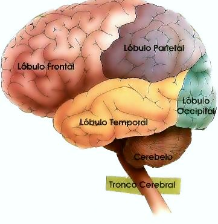

|

|
Em outros jogos do Programa Viagem ao Cérebro já discutimos sobre as relações de sentido. Vimos que para entendermos o significado de uma palavra o cérebro todo é convocado.
A decodificação/interpretação do significado de uma palavra depende do estado de vigília (Bloco I): quando estamos com a atenção focada, o significado da palavra suscita um feixe de nexos semanticamente aproximados (LURIA, 1979, p. 81) - que constituem campos semânticos - que fazem com que a palavra piano, por exemplo, suscite palavras como violino, orquestra, órgão, teclado.
Essa mesma seletividade não acontece quando estamos cansados ou sonolentos: as funções do córtex são inibidas comprometendo o processo de compreensão da palavra.
Quando o Bloco I está ativo, com a atenção focada, os Blocos II e III serão responsáveis pela (re)codificação das construções lógico-gramaticais, envolvidas nas relações de sentido. Para tanto, participam ativamente as áreas temporo-parieto-occipitais do cérebro, bem como a memória.
|